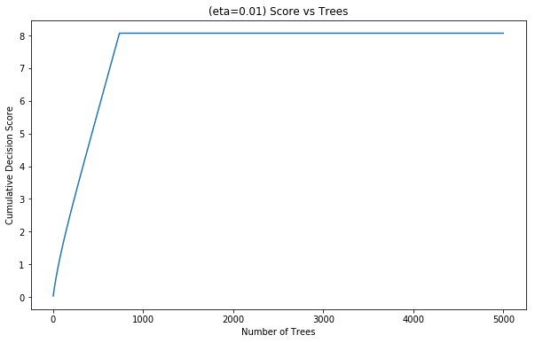
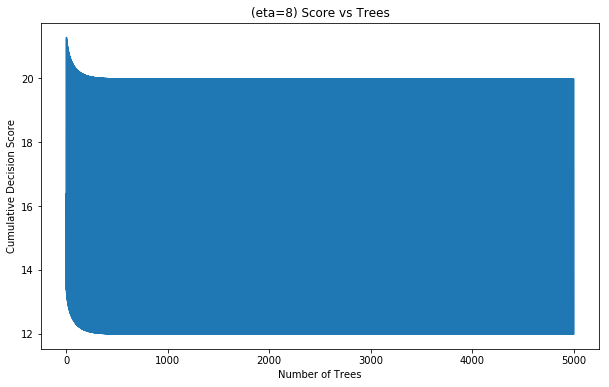

Will a GBDT's performance drop if we remove the first tree?
We'll look at how Gradient Boosting works and answer the question:
Will the performance of a GBDT model drop dramatically if we remove the first tree?
# from pypi
import numpy
import matplotlib.pyplot as pyplot
import seaborn
from sklearn.metrics import log_loss
from sklearn.tree import DecisionTreeClassifier
from sklearn.ensemble import GradientBoostingClassifier
from sklearn.datasets import make_hastie_10_2
from sklearn.model_selection import train_test_split
from xgboost import XGBClassifier
Define the Sigmoid
This is a function to calculate the sigmoid which we'll use to convert probabilities to classifications.
def sigmoid(x):
return 1 / (1 + numpy.exp(-x))
Make the dataset
This will be a very simple synthetic dataset. We'll use numpy's randn function to generate a dataset of random values that come from a normal distribution and then predict that the class is 1 if the value is positive and that it is 0 otherwise.
Generating the Random Data
First we'll generate an array of 5000 random numbers taken from a normal distribution.
X_all = numpy.random.randn(5000, 1)
Next we'll create a target array which will have 1's for all non-negative numbers and 0's otherwise.
y_all = (X_all[:, 0] > 0) * 2 - 1
Now we'll use sklearn's train_test_split function to create the training and testing data, with half the data using for training and half for testing.
X_train, X_test, y_train, y_test = train_test_split(X_all, y_all,
test_size=0.5,
random_state=42)
A Decision Tree Classifier
We'll build a Decision Tree using sklearn's Decision Tree Classifier for this model.
Building and Training the Model
This will be a very simple tree with a depth of 1 (a decision stump).
model = DecisionTreeClassifier(max_depth=1)
model.fit(X_train, y_train)
Measuring the Accuracy
print('Accuracy for a single decision stump: {}'.format(model.score(X_test, y_test)))
Accuracy for a single decision stump: 1.0
The 'tree' was able to classify all the testing data correctly.
A Gradient Boosting Classifier
While the Decision Tree Classifier only needed 1 layer, We will need 800 trees in the Gradient Boosting Classifier for it to classify the data correctly.
For convenience we will use sklearn's GradientBoostingClassifier, the situation will be similar if you use XGBoost or other Gradient Boosting implementations.
Training and Fitting the Model
gbc_model = GradientBoostingClassifier(n_estimators=5000, learning_rate=0.01,
max_depth=3,
random_state=0)
gbc_model.fit(X_train, y_train)
print('Accuracy for Gradient Booing: {}'.format(gbc_model.score(X_test, y_test)))
Accuracy for Gradient Booing: 1.0
Checking the log Loss Metric
The predict_proba method will give us the probabilities that a data-point belongs to a class.
y_pred = gbc_model.predict_proba(X_test)[:, 1]
We'll use log loss as our metric to see how the model did.
print("Test logloss: {}".format(log_loss(y_test, y_pred)))
Test logloss: 0.0003138777469167194
Some Helper Functions
def compute_loss(y_true, predicted_probabilities):
"""applies sigmoid to predictions before calling log_loss
Args:
y_true: the actual classifications
predicted_probabilities: probabilities that class was 1
"""
return log_loss(y_true, sigmoid(predicted_probabilities))
def print_loss(cumulative_predictions, y_test):
"""prints the log-loss for the predictions
Args:
cumulative_predictions (numpy.Array): The cumulative predictions for the model
"""
print(" - Logloss using all trees: {}".format(
compute_loss(y_test, cumulative_predictions[-1, :])))
print(" - Logloss using all trees but last: {}".format(
compute_loss(y_test, cumulative_predictions[-2, :])))
print(" - Logloss using all trees but first: {}".format(
compute_loss(y_test, cumulative_predictions[-1, :] - cumulative_predictions[0, :])))
return
Checking The loss
Now we get the cummulative sum of the decision function (staged_decision_function) for our trees. The i-th element is a sum of trees \[0 \ldots i-1\]. We cannot use staged_predict_proba, since we want to maniputate raw scores
(not probabilities). And only in the end convert the scores to probabilities using the sigmoid.
gbc_cumulative_predictions = numpy.array(
[x for x in gbc_model.staged_decision_function(X_test)])[:, :, 0]
Here we'll use the compute_loss function that we defined above to find the log loss with and without some trees.
print_loss(gbc_cumulative_predictions, y_test)
- Logloss using all trees: 0.0003138777469167194
- Logloss using all trees but last: 0.0003138777469168316
- Logloss using all trees but first: 0.0003202438533122706
You can see that when you remove the first tree there is a difference, but not as much as you might expect. Of particular note is that if we get rid of the last tree the model performs the same as is does with it.
Let's take a look at the plot of the cummulative decision function with differing numbers of trees. We'll plot the Cumulative Decision Score when predicting the classification of 1 as the number of stages (trees?) increases.
def plot_predictions(cumulative_predictions, identifier):
"""plots the cumulative predictions
Args:
identifier (str): something to identify the model
cumulative_predictions: predictions from trees
"""
figure = pyplot.figure(figsize=(10, 6))
axe = figure.gca()
axe.plot(cumulative_predictions[:, y_test == 1][:, 0])
axe.set_title("({}) Score vs Trees".format(identifier))
axe.set_xlabel('Number of Trees')
label = axe.set_ylabel('Cumulative Decision Score')
return
plot_predictions(gbc_cumulative_predictions, "eta=0.01")

You can see that the decision function improves almost linearly until about the 800th iteration and then the improvement stops. The slope of this line is connected to the learning rate, which we set in the Gradient Boosting Model.
If you remember the main formula for boosting, it is written something like this:
\[ F(x) = const + \sum\limits_{i=1}^{n}\gamma_i h_i(x) \]
In our case, \(\gamma_i\) are constant and equal to the learning rate \[\eta = 0.01\] It takes about 800 iterations to get a score of 8, which means at every iteration the score goes up about 0.01. This means that the first 800 terms are approximately equal to 0.01, and the rest are almost 0.
Which in turn means that if we drop the last tree we lower \(F(x)\) by 0 and if we drop the first tree we lower \(F(x)\) by 0.01, which results in a very, very small performance drop. So, even in the case of a simple dataset which can be solved with a single decision stump, with a Gradient Boosting Model we need to sum a lot of trees (roughly \(\frac{1}{\eta}\)) to approximate our golden single decision stump.
A Bigger \(\eta\)
To prove that last point let's try a larger learning rate of 8.
big_eta = GradientBoostingClassifier(n_estimators=5000, learning_rate=8,
max_depth=3, random_state=0)
big_eta.fit(X_train, y_train)
y_pred = big_eta.predict_proba(X_test)[:, 1]
print("Test logloss: {}".format(log_loss(y_test, y_pred)))
Test logloss: 3.0443902682648675e-06
print('Accuracy for Big Eta: {}'.format(big_eta.score(X_test, y_test)))
Accuracy for Big Eta: 1.0
big_eta_cumulative_predictions = numpy.array(
[x for x in big_eta.staged_decision_function(X_test)])[:, :, 0]
print_loss(big_eta_cumulative_predictions, y_test)
- Logloss using all trees: 3.0443902682648675e-06
- Logloss using all trees but last: 3.0836959336434695e-06
- Logloss using all trees but first: 2.0247047109196954
plot_predictions(big_eta_cumulative_predictions, "eta=8")

Now we see that it is crucial to have the first tree in the ensemble, the last one maybe not so much.
Even though the dataset is synthetic, a similar intuition will work with real data, except the Gradient Boosting Model can diverge with higher learning rates and a more complex dataset.
A More Realistic Data Set
Sklearn's make_hastie_10_2 function makes a ten-dimensional data set with two classifications as targets.
Building the Data Set
X_hastie, y_hastie = make_hastie_10_2(random_state=0)
X_train_hastie, X_test_hastie, y_train_hastie, y_test_hastie = train_test_split(
X_hastie,
y_hastie,
test_size=0.5,
random_state=42)
Our Decision Stump Again
Let's try the decision stump on the new dataset.
stump = DecisionTreeClassifier(max_depth=1)
stump.fit(X_train_hastie, y_train_hastie)
print('Accuracy for a single decision stump: {}'.format(
stump.score(X_test_hastie, y_test_hastie)))
Accuracy for a single decision stump: 0.5405
It dids't do quite so well, what about a decision tree in general?
tree = DecisionTreeClassifier()
tree.fit(X_train_hastie, y_train_hastie)
print('Accuracy for the Decision Tree: {}'.format(
tree.score(X_test_hastie, y_test_hastie)))
Accuracy for the Decision Tree: 0.7765
It does a little better, anyway.
The Gradient Boosting Model
gbc2_model = GradientBoostingClassifier(n_estimators=5000, learning_rate=0.01,
max_depth=3,
random_state=0)
gbc2_model.fit(X_train_hastie, y_train_hastie)
y_pred = gbc2_model.predict_proba(X_test_hastie)[:, 1]
print('Accuracy for Gradient Boosting: {}'.format(
gbc2_model.score(X_test_hastie, y_test_hastie)))
Accuracy for Gradient Boosting: 0.9436666666666667
gbc2_cumulative_predictions = numpy.array(
[x for x in gbc2_model.staged_decision_function(X_test_hastie)])[:, :, 0]
print_loss(gbc2_cumulative_predictions, y_test_hastie)
- Logloss using all trees: 0.18059661273530772
- Logloss using all trees but last: 0.180624604367416
- Logloss using all trees but first: 0.18064882642423313
In this case, although there is a difference, removing the last doesn't seem to be much better than removing the first.
XGBoost
We stated earlier that the result should be the same with other implementations of Gradient Boosting so let's see what happens if we use XGBoost instead.
xg_model = XGBClassifier(n_estimators=5000, learning_rate=0.01)
print(xg_model)
xg_model.fit(X_train_hastie, y_train_hastie)
XGBClassifier(base_score=0.5, booster='gbtree', colsample_bylevel=1,
colsample_bytree=1, gamma=0, learning_rate=0.01, max_delta_step=0,
max_depth=3, min_child_weight=1, missing=None, n_estimators=5000,
n_jobs=1, nthread=None, objective='binary:logistic', random_state=0,
reg_alpha=0, reg_lambda=1, scale_pos_weight=1, seed=None,
silent=True, subsample=1)
print('Accuracy for XGBoost: {}'.format(xg_model.score(X_test_hastie, y_test_hastie)))
Accuracy for XGBoost: 0.9408333333333333
y_pred = xg_model.predict_proba(X_test_hastie)[:, 1]
xg_cumulative_predictions = numpy.array(
[x for x in xg_model.staged_decision_function(X_test_hastie)])[:, :, 0]
print_loss(xg_cumulative_loss)
If you read the documentation for the python package for xgboost you'll see that they didn't implement the staged_decision_function for the XGBClassifier so you can't actually run the previous block. The XGBoost classifier ran much faster than the sklearn version did, and did almost as well in accuracy.
Source
- “Will Performance of GBDT Model Drop Dramatically If We Remove the First Tree?” Coursera. Accessed August 5, 2018. https://www.coursera.org/learn/competitive-data-science/home/welcome.